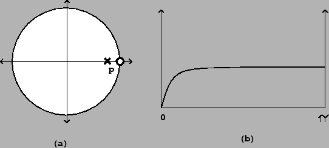

Sometimes an audio signal carries an unwanted constant offset, or in other words, a zero-frequency component. For example, the waveshaping spectra of Section 5.3 almost always contain a constant component. This is inaudible, but, since it specifies electrical power that is sent to your speakers, its presence reduces the level of loudness you can reach without distortion. Another name for a constant signal component is ``DC", meaning ``direct current".
An easy and practical way to remove the zero-frequency component from an audio
signal is to use a one-pole low-pass filter to extract it, and then subtract the
result from the signal. The resulting transfer function is one minus the
transfer function of the low-pass filter:
By examining the right-hand side of the equation (comparing it to the general
formula for compound filters), we
see that there is still a pole at the real number  , and there is now also
a zero at the point
, and there is now also
a zero at the point  . The pole-zero plot is shown in Figure
8.13
(part a), and the frequency response in part (b). (Henceforth, we
will only plot frequency responses to the Nyquist frequency
. The pole-zero plot is shown in Figure
8.13
(part a), and the frequency response in part (b). (Henceforth, we
will only plot frequency responses to the Nyquist frequency  ;
in the previous example we plotted it all the way up to the sample rate,
;
in the previous example we plotted it all the way up to the sample rate,
 .)
.)
|  |